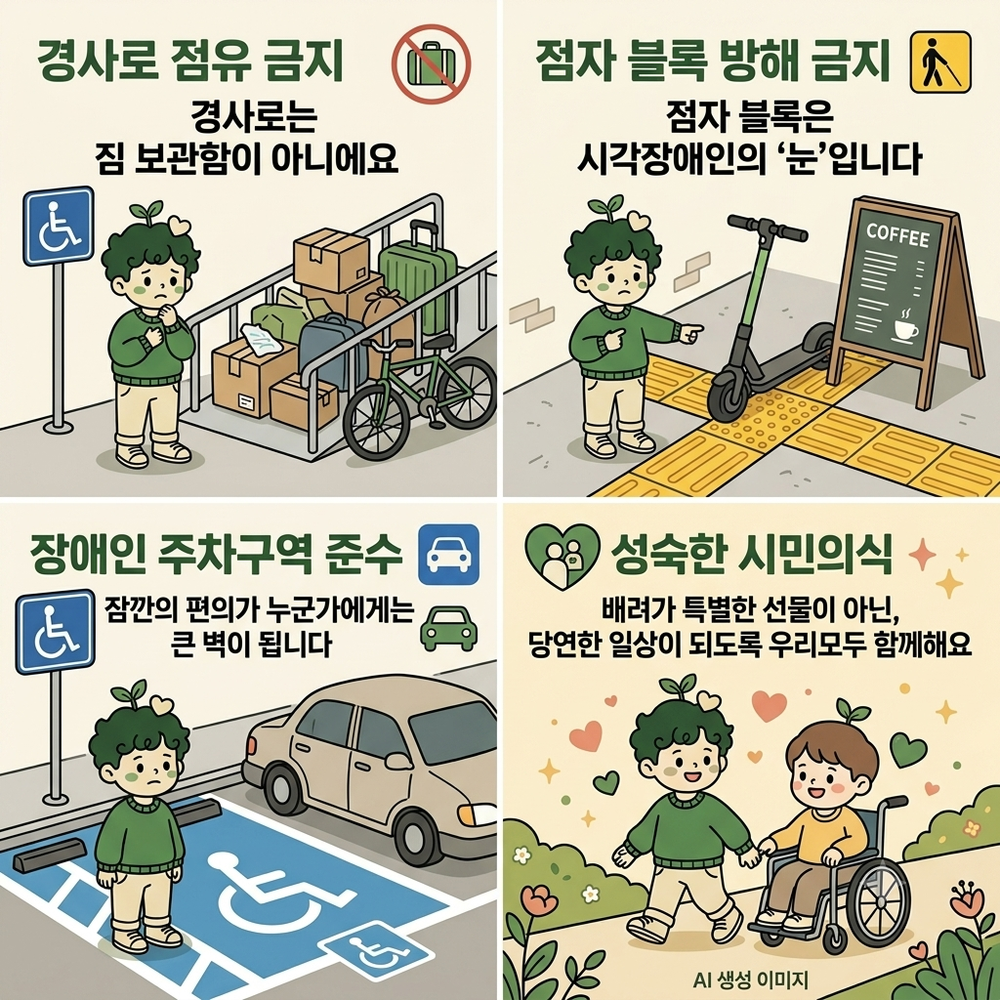
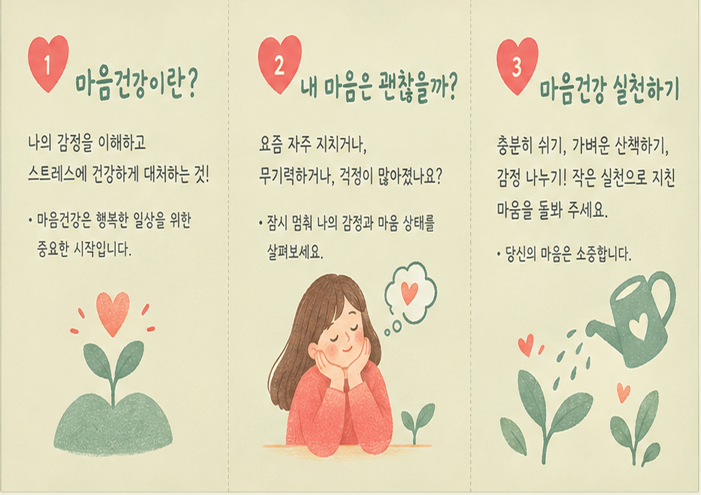
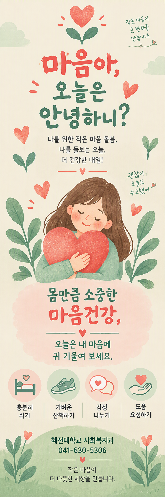
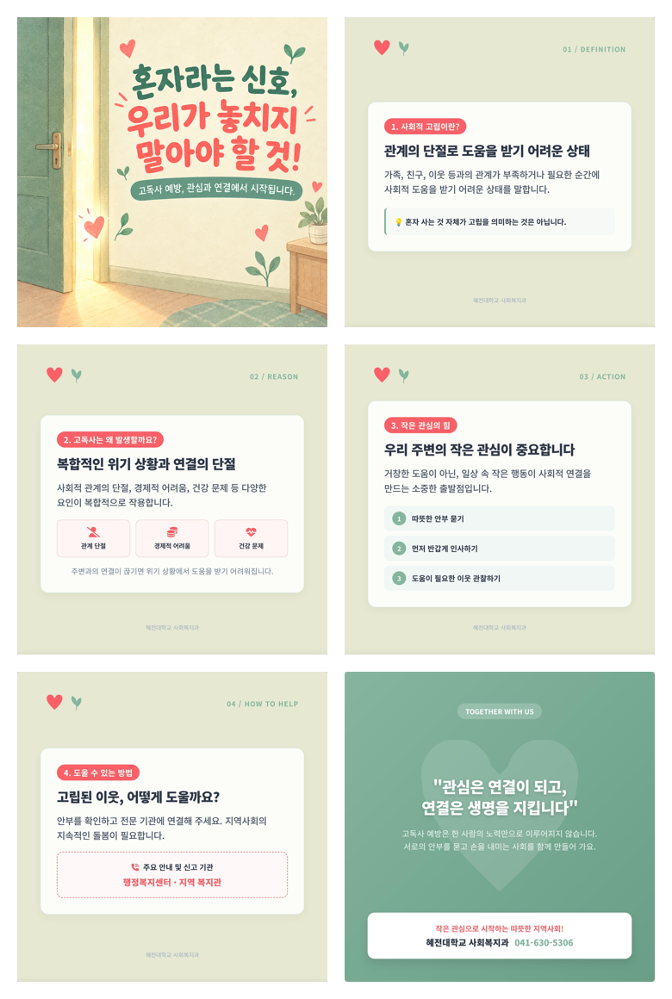
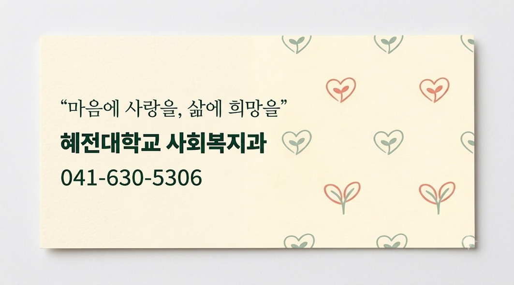

마음에 사랑을, 삶에 희망을 전하는 예비 사회복지사
우리 주변의 소외된 이웃을 발굴하고, 마음건강을 돌보는 일에 깊은 관심을 가지고 있습니다. 이번 학기 AI 도구를 활용하여 복지 대상자에게 필요한 정보를 더 따뜻하고 효과적으로 전달하는 시각 콘텐츠 기획 역량을 키웠습니다.앞으로도 어르신과 지역주민의 이야기를 경청하는 공감 능력과 생성형 AI 기반 디지털 홍보·기획 역량을 결합해, 현장에서 즉시 소통하고 기여하는 사회복지사로 성장하겠습니다. .

장애인 편의시설(경사로, 점자블록 등) 준수를 독려하고 성숙한 시민의식을 알리기 위해 기획한 캠페인입니다.
[활용 AI] ChatGPT로 캠페인 메시지를 기획하고, 나노바나나(Nanobanana)로 포스터 이미지를 제작했습니다.

지역사회 주민들의 마음 돌봄 실천을 독려하기 위해 따뜻한 크림톤 화풍으로 기획한 리플릿입니다.
[활용 AI] ChatGPT로 리플릿 안내 문구를 구성하고, 나노바나나(Nanobanana)로 따뜻한 크림톤 삽화를 제작했습니다.

"마음아 오늘은 안녕하니?"라는 따뜻한 카피를 중심으로, 지친 일상 속 마음 돌봄의 중요성을 시각화했습니다.
[활용 AI] ChatGPT로 감성 카피를 다듬고, 나노바나나(Nanobanana)를 활용해 캠페인 배너 이미지를 제작했습니다.

사회적 고립을 예방하고 따뜻한 관심을 촉구하기 위해 AI를 활용해 제작한 정보 전달형 카드뉴스입니다.
[활용 AI] ChatGPT로 핵심 정보를 요약·기획하고, 나노바나나(Nanobanana)로 카드뉴스 비주얼을 제작했습니다.

'마음에 사랑을, 삶에 희망을' 이라는 핵심 가치를 시각화하여 예비 사회복지사로서의 정체성을 담았습니다.
[활용 AI] ChatGPT로 슬로건을 구성하고, 나노바나나(Nanobanana)를 활용해 예비 사회복지사 명함을 디자인했습니다.
사회복지 전공에 대한 오해를 풀고, 법률과 기획력을 갖춘 전문가임을 알리기 위해 제작한 숏폼 영상입니다.
[활용 AI] ChatGPT로 영상 대본을 작성하고, 캡컷(CapCut)의 AI 자막·영상 편집 기능을 활용해 제작했습니다.